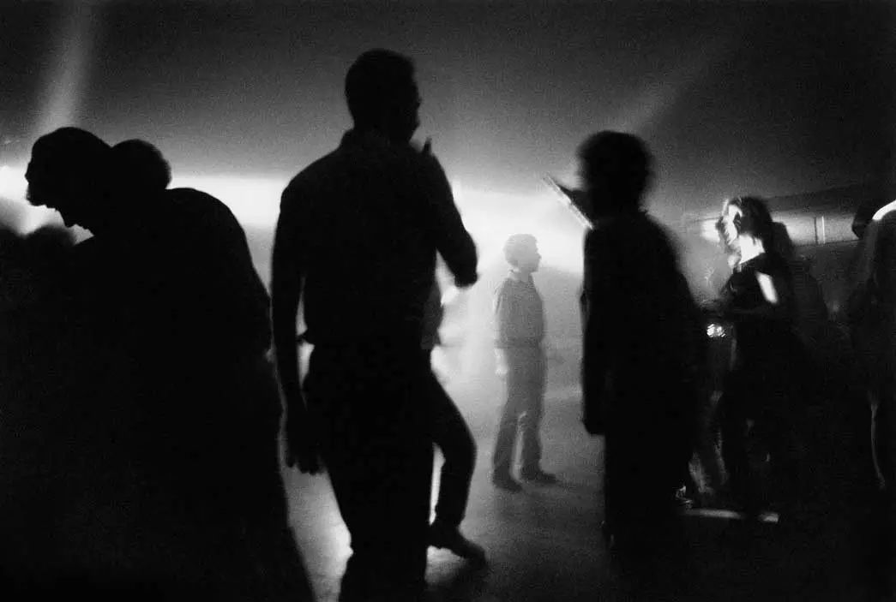
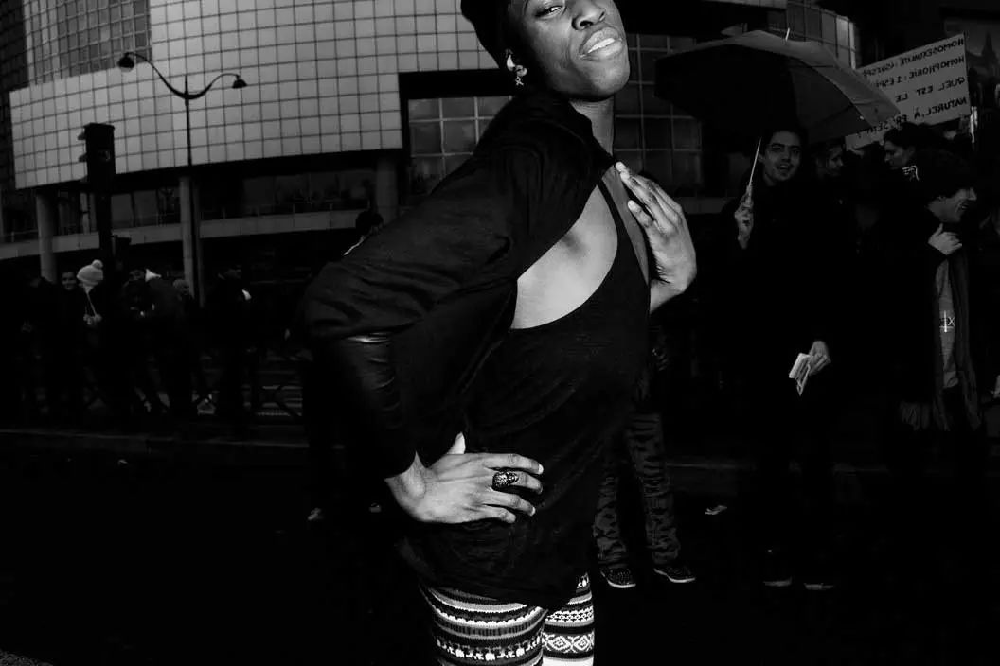

同声传译 | 孤独患者——男同性恋的孤独症疫情

译者序
因为一次偶然的机会读到了这篇文章，而在读完当晚派对上我就喝醉至大哭。我对此耿耿于怀并认为这篇文章与此事脱不开干系。终于耗时两天将它翻译出来。
文章虽好，但这篇幅对于多数人来说必然是太长不看。粗略来说，文章的第一段讲述了男同性恋与直男间在自杀率以及健康方面逐渐凸显的差异，在第二第三部分分别讨论了出柜前后社会因素如何导致了上述现象，而在第四部分论述了可能的应对方案。
虽然文章本身所讨论的美国与中国在国情文化和平权进程上都有着极大差异，但我仍在文中发现许多值得思考的问题。尤其是当我们观察西方的平权历史时往往会认为其线性的发展是必然的——从非罪化开始到去病理化，再到争取经济权益和生存空间，以及倡导出柜和反对霸凌，最后以同性婚姻合法化为终点的胜利标识。但这篇文章所反映的同志社群中的问题恰恰表明了对于西方平权路径的一味模仿并不能解决一切性少数群体遇到的挑战，而作为平权路上后来者的我们或许可以从他们对于自己的批判中以更少的代价获得经验。
文章中对于出柜前我们内心受到的创伤以及其表现形式的分析触目惊心，作者也给出了很多事例来表明以出柜作为自我认同的终点可能是在忽视很多实际存在的问题。但这绝非是对于我们倡导出柜的否定，而可以更好的帮助我们意识到出柜意味着什么，而我们又该如何更好地应对遇到的困难。
希望你们在阅读后能够有所收获。

孤独患者——
男同性恋的孤独症疫情
The Epidemic of Gay Loneliness
一
“以前，当冰毒用完时我会特别兴奋。”我的朋友Jeremy这么告诉我。
“如果你还有货，”他说，“你就必须一直吸。等吸完了，你就觉得，‘太好了，我终于可以回归正常生活了。’我会每个周末通宵达旦地去参加那些性派对，然后一直到周三都感觉自己像坨屎一样。大约两年前我改成吸可卡因，因为这样我第二天还能工作。”Jeremy告诉我这些时坐在西雅图医院六楼的病床上。他不愿意告诉我关于这次吸毒过量的具体情况，只说某个陌生人叫了救护车，而他醒来时就在病床上了。
我完全没有预料到Jeremy会是说出这种话来的人。直到几周以前我根本不知道他会用任何比马丁尼酒更劲的东西。他衣冠整洁，十分聪明，不吃麸质食物，每天都穿着工作衬衫。我们第一次见面是三年以前，他问我是否知道附近有什么适合做CrossFit的地方。而今天，当我问他在医院过得如何时，他的第一反应是这里没有Wifi，而他还有好多工作邮件要回复。
“这些毒品就是无聊和孤独的混合产物。”他说，“我总是在周五精疲力竭地下班回到家，纠结着‘能干啥呢？’然后打电话叫点毒品，再去网上找找附近有没有派对。如果不是做这事，那就只能是自己一个人找部电影看了。”
Jeremy不是我唯一的在为生活挣扎的同性恋朋友。Malcolm很少出门因为他有严重的焦虑症。Jared患有抑郁症和身材焦虑症，这让他的社交生活逐步萎缩至只剩下我，健身房和网上约炮。还有Christian, 我第二个亲过的男人，在32岁时自杀了。在他男友和他提出分手的两周后，Christian去了家派对商店买了罐氦气开始不断吸入，然后给他前男友发了短信确保他会发现自己的尸体。
多年以来我逐步注意到我的直人朋友和同性恋朋友间越来越大的差异。我社交圈里一半的人逐渐消失在了恋爱生子和郊区的房子里，而另一半则在疏离、焦虑、毒品和高危性行为中挣扎。
这一切都不符合我以往认知中告诉自己的传统叙事。和我一样，Jeremy的成长过程中并未遭到同伴的霸凌或是被家庭所排斥。他不记得自己有被骂过死基佬。他在西海岸的郊区由一位女同性恋母亲养大。“她在我12岁时向我出柜了，”他回忆道，“然后紧接着就说她知道我是同性恋。那时候我自己都没大搞明白呢。”
Jeremy和我三十四岁了。在这三十四年的时间内，男同志社群在法律和社会认同方面取得的成就比历史上任何其他社会群体都要多。在我青少年时期，同性婚姻合法化曾是一个遥远的目标，报纸上提到时还会对这个词打上引号。而现在同性婚姻已被最高法院刻入法律。公众对于同性婚姻的支持率从1996年的27%攀升至2016年的61%。再看流行文化：从《虎口巡航Cruising》到《粉雄救兵Queer Eye》再到今年的《月光男孩Moonlight》，同性恋角色已经如此常见，现在人们甚至允许他们有缺点了。
我们庆祝着这些改变的速度之快和规模之广，然而与此同时，抑郁，孤独，精神类物质滥用（包括烟酒以及毒品）的比例和过去的几十年相比依然居高不下。根据不同的研究，现今同性恋自杀的几率是直人的2倍至10倍不等。我们患有严重抑郁症的几率是直人的2倍。而且正如过去几十年的艾滋疫情，这些精神创伤似乎在男同性恋中尤为常见。在一次针对最近搬入纽约市的男同性恋的调查当中，四分之三的人在遭受着焦虑症或抑郁症的折磨，有药物滥用或酗酒的经历，或是发生过高危性行为，有些则是这三类问题的任意组合。尽管我们经常谈到和自己的密友建立亲如家人的“自选家庭”式的关系，男同性恋往往比直人或女同性恋有更少的亲密朋友。在一次对艾滋病诊所护理人员的调查中，一位受访者告诉调查人员：“问题不在于他们不知道怎么挽救自己的生命。问题是他们是否认为自己的生命值得被挽救。”
我不会假装自己对于这一切有多客观。我成长于蓝色城市（指民主党为多数的区域，通常对性少数群体较为友好），并由乐于参与同性恋亲友会的家长养大，却长期单身。我认识的人中没有谁死于艾滋，我未曾遇到过直接的歧视，而在我出柜后的世界里，婚姻、带白篱笆的房子、养一条金毛犬——这样的生活对我而言不仅是可能的，更是所有人期待你去拥有的。但我反复参与心理治疗的频率甚至高于我将手机上的同性交友软件下了又删的次数。
“婚姻平等和法律地位的改变对有些男同性恋来说的确带来了进步，”纽约大学一位专攻同性恋和异性恋男性在精神健康方面差异的研究者，Christopher Stults，如是说，“但对于很多人来说，这件事让他们失望。他们觉得，我们有了这样的法律地位，但是生活中似乎仍旧缺少了什么。”
这种空虚的感觉也不是一个美国独有的现象。在荷兰，尽管同性婚姻从2001年开始就已经合法了，男同性恋与直男相比依然有3倍患有情绪障碍、10倍发生自杀性自残的几率。瑞典在1995年便已立法允许民事结合，而2009年又立法通过了同性婚姻，但与男性结婚的男性自杀率依然是与女性结婚者的三倍。
这些恐怖的数据都指向同一个结论：对一个被其他男性所吸引的男性来说，生活中的疏离和孤独感仍然严重到了危及生命的程度。所幸的是，流行病学家和社会科学家正在前所未有地接近问题的答案。
二
TravisSalway是加拿大英属哥伦比亚疾控中心的一名研究人员。他在过去五年致力于研究为何男同性恋自杀率居高不下。
“以前是柜子里的孤独感定义了男同性恋的生活”他说，“但现在有百万计的男同性恋已经出柜，却依然感到同样的孤立。”
我们在一间迷你的面馆共进午餐。当时是十一月，他穿着牛仔裤和胶鞋，还戴着婚戒。
“与同性爱人结婚了？”我问道。
“而且忠贞不二，”他说，“我想这能给我理解这座城市的关键。”
Salway在俄亥俄的Celina市长大。这是一个人口一万人左右的工业镇；在这种地方，他说，很多21岁的年轻人会考虑为了结婚放弃大学。在他意识到自己是同性恋前，他就被看作同性恋而遭到霸凌。“我当时十分阴柔，还参加了合唱团。”他说，“这就给了他们足够的理由来欺负我。”于是他开始变得小心翼翼。高中时期大部分时间他都有女友，而且一直避免和男生接触——无论是恋爱关系或是精神交流——直到他能够离开这里。
到2000年代末期，他已经成为了一名社工和流行病学家。像我一样，他对他的直人和同性恋朋友间愈发巨大的差异感到诧异不解。他开始思考长期以来他听到的关于男同性恋与心理健康的叙事是否仍有不完善之处。
当上世纪50、60年代的医学研究者们最早发现这种差异时，他们认定这是同性恋疾病的一种表征，正如其它种种“性欲倒错”体现出的症状一样。随着同性恋权益运动的发展，同性恋不再作为精神疾病存在于权威的《精神障碍诊断统计手册》，而心理健康方面的这一重大差异也被创伤理论所解释。同性恋们被赶出家门，情感生活为法律所不允许。他们当然会因此有着极高的自杀和抑郁几率。“我曾经也是这么以为的，”Salway说，“我以为同性恋自杀是一个过去时代的产物，或者是集中在那些觉得自己走投无路的青少年当中。”
但当他看到数据，他发现问题不仅是自杀率，影响的人群也不仅是痛苦中的青少年，分布也不仅是恐同情绪严重的地区。每个区域不同年龄的男同性恋都有较高的心血管疾病、癌症、失禁、阳痿、过敏和哮喘的发病率。Salway后来发现，在加拿大男同性恋死于自杀的人数多年以来都超过了死于艾滋病的人数。（在美国或许有同样的现象，但并没有人做过相关的调查研究。）
Alex Keuroghlian, LGBT人口健康研究中心的一名精神病学家这么说道：“我们发现未曾遭受性侵犯或暴力袭击的男同性恋依然会经历和参与战争或遭到性侵犯的人一样水平的创伤后应激障碍。”
这位精神病学家认为男同性恋“总是做好被拒绝的准备”。我们每时每刻都在扫视四周的社会环境并试图找出我们不合群的方面。我们很难坚持做自己，而且我们会将社交时的失败经历在脑内循环播放。
而这一系列症状中最奇怪的一点在于我们不认为这些事情是病症。自从他开始研究这些数据，Salway也开始采访尝试自杀而幸存的男同性恋们。
“当你问他们为何尝试结束自己的生命，”他说，“大部分人不会提到这和自己的同性恋身份有关。”与之相反的是他们往往会告诉他是因为恋情不顺，或是职场和财务方面的问题。“他们不觉得自己的性取向是生活中十分显著的一部分，然而这个人群的自杀几率却远高于其他人。”

研究人员会用“少数族群压力”一词来解释这一现象。它最直接的形式十分简单：作为边缘群体的一员需要付出额外的努力。当你是公司会议中唯一的一名女性，或是大学宿舍里唯一的一名少数族裔，你思维上考虑的层级和多数人会有差别。如果你和上级发生争论，或许争论会失败，那你是否加强了人们对于女性在工作场合的刻板印象呢？如果你成绩很糟，会不会有人将其归咎于你的族裔呢？即使你没有遭受直接的歧视，思考这些问题的可能性会逐渐显露出它带来的压力。
对于同性恋者而言，这一效应的效果会因为身份的隐蔽性而成倍增长。我们不仅要从12岁开始就做这些额外的思考来回答内心的问题，我们往往只能独自回答这一切而无法询问朋友或家长。
JohnPachankis, 一位耶鲁的精神压力研究人员认为最严重的损害是在意识到自己性取向但还未开始向他人透露这点的五年左右期间。在这段时间内，即使是很小的压力往往也能造成不成比例的影响，并非因为它们一定会造成心理创伤，而是因为我们会开始预期这些压力的出现。“就算没有人骂你变态，你也会调整自己的行为以防这样的情况出现。”Salway说。
James,一位基本出柜的20岁青年，告诉我们在他七年级还是柜内的12岁少年时，一位女同学问他觉得另一位女生怎么样。“呃，她看起来像个男的，”他不假思索地说，“所以，是吧，我可能会愿意和她发生关系。”
他立刻就意识到自己说了什么，开始感到恐慌。“我当时就在想，有人听到了吗？他们会告诉别人我这么说吗？”
这也是我的少年时光：小心翼翼，弄出差错，压力山大，最后过度补偿。有一次在水上公园，我中学的朋友发现我在盯着他看。“哥们，你刚才是在打量我吗？”他问我。我成功地躲避了这个问题，说了“我不喜欢你这型的。”什么的，然后在接下来的几周都在担心他对我的看法。但他再也没有提起过这件事。所有可能的霸凌都只发生在我的脑海里。
“男同性恋的创伤本质是长时间的。”William Elder, 一位性创伤研究员也是心理学家这么认为，“如果你经历了一次创伤性事件，你的创伤后应激障碍或许能通过四到六个月的心理治疗解决。但如果你长年累月承受着小型压力源——细枝末节的事情让你怀疑“这是因为我的性取向吗？”——情况很可能会更为糟糕。”
换句话说，如同Elder给出的一个比喻，呆在柜子里就像有人不断地不轻不重地打你的胳膊，永不停歇。一开始，这很烦人。过一会儿，你会暴怒。而最终这会是你唯一能思考的问题。
而应对这一切的压力就每天在你的体内堆积。
作为男同性恋成长，在很多方面和在极度贫困中成长十分相似。2015年的一项研究表明男同性恋分泌更少的皮质醇，一种用于调节压力的荷尔蒙。这项研究的作者之一Katie McLaughlin阐述到，他们的神经系统在青少年时期长期处在被激活的状态，因此导致在成人时期会更为迟缓。在2014年研究人员对比了异性恋与同性恋青少年的心血管疾病方面的风险。他们发现同性恋小孩并不比异性恋小孩遭遇更多“造成压力的生活事件”，（直人们往往也有自己的烦恼），但他们所经历的事件对于他们神经系统造成的损害更大。
AnnesaFlentje, 是加州大学旧金山分校的精神压力研究员，专业是研究少数族群压力对于基因表达的影响。所有这些小的打击在融合了我们对它们的适应之后变成了，用她的话来说，“即使在30年后也不会被关停或被挑战的自动思考方式。”无论我们有没有意识到，我们的身体都会将儿时的柜子带入成年时期。“我们是孩子的时候就没有任何工具来处理这些压力，成年时期自然不会意识到它们是创伤。”John这么认为,他在辞去了顾问工作后开始学习陶艺并在Adirondacks担任探险旅行的领队。“我们长大成人，但我们的本能反应还是像我们童年时那样处理问题。”
即使是Salway，在多年研究少数族群压力的情况下，依然觉得有些时候他和伴侣在温哥华街头漫步时会感到压力。没有人攻击过他们，但会有些混蛋冲着他们骂脏话。这种事情没发生过几次就足以让人心里充满戒备，当有车从身边开过时心跳会略微加速。
但少数族群压力不足以完全解释为什么男同性恋会有一系列的健康问题。因为第一轮伤害在我们出柜前就发生了，第二轮或许更为严重的伤害则在出柜后紧随而来。

三
没有人告诉过Adam他的举止不要这么娘。但他就像我们中的大多数人一样学会了让自己看起来不娘一些。
“我从未担心过我的家庭会是恐同的，”他说，“我小时候会披着一条毯子在后院跳舞。我父母觉得这超可爱，所以他们拿摄像机拍了下来放给我的爷爷奶奶看。他们都在看录像时我就躲在沙发后面，感觉特别羞耻。我那时候六七岁吧。”
等到他上高中时，Adam已经学会很好地控制他的肢体语言，没有人怀疑他是同性恋。但是他觉得，“我依然无法相信任何人因为我抱有这个秘密。我就像一个孤独的特工在执行任务。”
他在16岁时出柜，然后高中毕业后去了旧金山开始参与艾滋病预防工作。但与他人的距离感并未就此消失。于是他决定利用性爱来治愈自己。“性是我们社群中最充裕的资源。你很容易让自己相信当你和他人做爱的时候，你们拥有十分亲密的关系。这就会成为你的精神寄托。”
他的工作时间很长。疲惫地回到家后，他会吸一点大麻，倒一杯红酒，然后开始在交友软件上邀请别人寻欢。有时他甚至连着找两到三人。“我刚关上门送走上一个，就会想，他没撞到点上。于是我就再找一个。”
这样的情况持续了几年。上一次感恩节的时候他回家探望父母。因为压力太大，他又感到了强迫性的做爱的需求。当他终于找到附件有愿意约炮的人的时候，他跑到父母的房间狂翻他们的东西希望找到几片伟哥。
“所以那是你人生的最低谷吗？”我问他。
“第三第四低吧。”他说。
Adam现在参与了一个12步治疗性瘾项目。他已经有六周没有发生性关系了，而这之前每次性关系之间最长的间隔是三到四天。
“有很多人会做很多爱因为这很有趣，而这样挺好的。但我一直尝试把性爱当作一个旧包裹，不时拿出来抖一抖希望掉出些里面并没有的东西——关怀和陪伴。这样做我就不必去面对自己的生活。而我一直拒绝承认这是个问题因为我总是告诉自己：‘我已经出柜了，我搬来了旧金山，我已经完成作为一个同性恋的任务了。’”
几十年以来，心理学家也是这么认为的：男同性恋身份认同的关键步骤最终都将引导至出柜，而在我们认同了自己之后，我们就可以开始在我们的社群内和有着相似经历的人们一起创造自己的生活。但在过去十年的研究表明，出柜后的压力依然在增长。2015发布的一份研究表明，焦虑和抑郁的概率在刚出柜的人群中高于仍在柜中的人群。
“你刚从柜子里出来，感觉自己就像破茧成蝶，然后同志群体一巴掌把你的理想主义扇走了。”Adam说，“我刚出柜的时候去了西好莱坞，因为我知道我们的人都在那里。但那里太恐怖了，那里就是成年人的世界，完全不适合青少年。你从父母家里离开来到同志夜店就看到一群人在嗑药，然后你会疑惑：这是我的群体？这他妈的就个充满禽兽的热带雨林吧。”

“我十七岁的时候出柜了，而我没在同志社群找到任何容纳我的地方。”软件工程师Paul说，“我希望像电影里看到的那些直人情侣一样陷入热恋。但在同志圈内我感觉自己就是一坨肉。我以前甚至宁愿走四十分钟的路去一家更远的超市而不是十分钟路程的那家，就为了避免经过同志街区。”
Paul和我聊的时候用了“二次创伤”这个词。你孤独地成长，积累了种种负担，然后你来到了同志街区，觉得终于有人能接纳真实的自己，却发现这里的每个人都有自己的负担。尔后你会发现现在导致你被拒绝的原因不再是同性恋的身份，但会是你的体重，你的收入，你的肤色。“小时候被霸凌的人们长大后学会了霸凌。”Paul说。
“男同性恋对彼此往往相当不友好。”户外运动向导John认为，“在流行文化中，变装皇后们因为他们的毒舌而闻名，人们也觉得很搞笑。但这种刻薄几乎是病态的。我们的大部分青少年时期都是在混乱和谎言中度过的，我们不太愿意向他人表达自己，于是我们选择展示给他人的就是世界展现给我们的恶毒。”
每个我认识的男同性恋都在脑中收藏着其他基佬对他们的恶毒言行。我有次和人约会，才刚到对方就猛地站了起来，说我比照片上看起来要矮，然后转身就走。Alex在西雅图当健身教练，曾有游泳队的队员和他说：“如果你愿意无套干我我可以忽视你的脸。”住在波特兰的英国人Martin自从搬来这里重了五公斤左右。圣诞节的时候他在交友软件上收到了信息“你以前看起来挺性感的。搞砸了自己很可惜欸。”
对于其他少数族群来说，生活在和自己相似的群体中带来了更低的焦虑和抑郁，接近能够很快理解你的境遇的人能带来很多帮助。但对我们来说，这个效应是相反的。多项研究表明居住在同志社群中会导致更高几率的高危性行为，毒品使用，以及更低的参与例如志愿者活动或体育运动等社区活动的可能性。2009年的一项报告显示与同性恋社群联系更多的男同性恋对浪漫关系满意度较低。
“男同性恋和男双性恋通常认为同志社群是生活中主要的压力源之一。”Pachankis认为。原因在于“内部歧视”对于精神造成的伤害比被主流社会所拒绝造成的损伤更强烈。直人的厌恶很容易就被无视，或是翻个白眼竖个中指就过去了，因为你并不需要他们的认同感。而来自其他同性恋的拒绝则会像是失去了唯一可能获得友谊或爱情的渠道。因为你更需要他们，所以他们的拒绝更具破坏力。
我所接触的研究人员认为男同性恋造成这类创伤的原因有二。第一点，也是最常被提到的一点，是男同性恋会互相伤害因为我们归根结底是男性。
“维持男性气质的任务在一个全是男性的环境下会变得更具挑战。”Pachankis说，“男性气质是脆弱的。人们需要不断地展现它，保护它，强调它的存在。在很多研究中都能见到，当有人威胁到男性的男性气质时他们会做出许多愚蠢的举动。他们会展现更具攻击性的姿态，开始承担更高的财政风险，会想要揍什么东西。”
这也可以解释同志社群内长久以来对于更为阴柔成员的污名化。根据杜克大学的临床心理学家Dane Whicker的研究，大部分男同性恋希望自己能够和更阳刚的人约会，并且希望自己能够更阳刚。这或许是因为阳刚的男性在历史上能够更好的融入直人社会。也可能是内化了的恐同思维：阴柔的男同性恋依然会被刻板印象认为是受，在性交中作为被插入方。
一项为期两年的跟踪调查发现男同性恋出柜的时间越长越有可能在性爱中攻受皆可或是作为攻方。研究人员发现这种意在加强自身男性气质并要求自己能够扮演不同性角色的训练被男同性恋用于互相给予压力来获取“性资本”；相似作用的行为还包括健身和修眉。
“我健身唯一的原因就是希望自己看起来有可能是攻。”Martin说当他出柜的时候坚信自己太瘦太娘而小受们会认为自己是他们中的一员，“于是我会开始装出一些特别阳刚的举止。我男友曾注意到我如今去酒吧点酒的时候声音还是会低八度。这来源于刚出柜那几年的习惯，那时我以为只有靠着这种蝙蝠侠式的嗓音我才有可能获得约会。”
在长岛长大，现居住在纽约曼哈顿的Grant说，他曾经对于自己的站姿特别敏感——双手支在臀上，单腿微曲。而在高一的一整年他都仔细观察男老师们的站姿，于是他决定自己站立时要双腿分开，胳膊垂在身体两侧。
这种男性气质竞赛对于所有人都有影响，包括始作俑者。气质阴柔的男同性恋会有更高的自杀、孤独和精神疾病的几率。而气质阳刚的男同性恋更容易焦虑、参与高危性行为以及更高频率地使用烟酒和毒品。一项研究试图找出住在同志社群中导致抑郁概率升高的原因，发现这种影响只发生在阳刚的男同性恋身上。
第二个同志社群成为特殊压力源的关键则在于我们如何拒绝他人，而非为何拒绝他们。
在过去的十年里，传统的同性恋空间——酒吧，夜店，浴室——在逐渐地消亡，取而代之的是社交网络。至少有70%的男同性恋在使用交友软件比如Grindr和Scruff。2000年左右20%的男同情侣通过网络认识，2010年时这一数据已上升至70%。与此同时，通过朋友认识的情侣比例则从30%降至12%。
一般来说当你在新闻当中听到关于交友软件的影响力之大——比如说最受欢迎的Grindr称用户每日平均花费90分钟使用该软件——这新闻总是和恐慌有关：谋杀犯或是恐同者通过此法寻找受害者，或是在纽约或伦敦出现的嗨操（吸毒后进行性行为）现象。以上的现象的确是问题，但这些软件的真正影响更为隐秘安静，也更为深远：对我们中的大部分人来说，社交软件成为了我们和其他同性恋互动的基本方式。

“和人在Grindr上约炮比独自一人去酒吧要容易多了，”Adam说，“尤其是当你刚搬到一座新的城市，你很容易让社交软件成为你的社交生活。寻找社交场合并为之付出精力相比之下太难了。”
“有时我会忽然希望别人能对我有欲望，于是我就会上Grindr,”Paul说，“我会上传一张裸着上身的照片然后就会收到好多信息告诉我我很帅。在那个瞬间感觉会很棒，但并不会有什么结果，而那些信息几天之后也会渐渐少起来了。就感觉像是我在挠痒，但我得了疥疮，这么做只会让疾病扩散。”
社交软件最糟糕之处也和同性恋与直人间的健康差异有关。它们不仅令人不断使用，它们被设计成完美地强化了我们对于自身的一切负面印象。在创伤压力研究员Elder 2015年的一份调查中，90%的受访者希望自己的伴侣是高大年轻阳刚肌肉白人男性。而对于大部分的人来说，我们连其中的一个指标都不一定满足，更别提所有的指标了，所以交友软件无非是提供了高效地感觉自己丑陋的途径。
Paul说每次他打开交友软件时都会焦虑地等待被拒绝。前心理顾问John现在27岁，身高186，六块腹肌即使穿着羊绒毛衣依然清晰可见。即使是他也会发现自己发出的大部分信息石沉大海，他平均大约需要花10小时左右在网上与人交流才会获得1小时约会或是约炮的时间。
情况对于有色人种的男同性恋会更为糟糕。Vincent为旧金山卫生部工作，向拉丁裔和非洲裔男同性恋提供心理咨询服务。他表示交友软件给少数族裔的只有两种反馈：拒绝（“抱歉，我对黑人没兴趣”）和性癖（“我就对黑人特别有兴趣。”）。Paihan是居住在西雅图的台湾移民。他向我展示了自己的收件箱。这里面就像我的一样大多是自己发出的没有获得任何回复的“Hello”。仅有的一些信息往往就是“Asiiiaaaan!”(亚洲人)。
这一切并不新鲜。Walt Odets是一位从1980年开始研究社交隔离的心理学家。他认为交友软件给同性恋们带来的烦恼和八十年代浴室所带有的烦恼十分相似。但他在自己更年轻的病人中观察到的区别则是，“如果有人在浴室中拒绝了你，你们或许还会发生友好的交谈。你或许会因此获得一个新的朋友，这会是一个正面的社交经历。而在交友软件上，如果对方不认为你是他的目标，就会直接忽视你。”我采访过的男同性恋们对于交友软件的态度就像是对待糟糕电信服务：这的确很差，但你又能怎样呢？“在小城市里你必须使用交友软件。”耶鲁的心理学家Michael Moore 认为，“它替代了同性恋酒吧的功能，而代价就是所有的偏见都一览无余。”
交友软件所强化的，或是加速的，是Pachankis称为“世界最棒小孩假设”这一现象的成人版。在孩童时期，柜子内的我们更倾向于将自我价值和外部世界对我们的期待联系起来——擅长运动，成绩优异等等。成年以后，社会规则和我们所在的社群压力会进一步强化这样的联系：自我价值等同于外观、男性气质、性爱表现。但是即使我们努力在某天达到了所谓的阳刚肌肉强攻的理想状态，我们也只是把自己陷入极端脆弱的境地：一旦我们不可避免地失去这种理想状态，感情上的崩溃也必然随之而来。
“我们总是通过他人的目光来过自己的生活。”Alan Downs如此评论道。他是名心理学家，他的著作《天鹅绒的愤怒》一书关注男同性恋面对羞耻感和社会认同的抗争。“我们总是希望能有源源不断的新鲜男人，更多的肌肉，更多的地位，随便什么能带来转瞬即逝的认同感都好。然后某天我们在40岁时醒来，精疲力尽，于是我们会疑惑，就这样了吗？然后抑郁感席卷而来。”
四
纽约大学教授PerryHalkitis从九十年代起就开始研究同性恋与直人之间的健康差距。他发表过四部关于同性恋文化的著作，采访过的对象包括因艾滋病病危的患者，从毒瘾中逐步戒断者，以及纠结着该如何策划自己婚礼的同性情侣。
而在两年前，他十八岁的侄子James颤抖着出现在他家门前，James让Halkitis和他的伴侣在沙发上坐好，然后宣布了他是同性恋。“我们告诉他：‘恭喜啊，你的会员卡和新手大礼包就在隔壁房间。’”Halkitis回忆着，“但他太紧张了，都没发现这是个笑话。”
James成长于纽约皇后区一个人数众多、有爱开放的大家庭。他就读的公立学校有着公开出柜的同学。“但是他依然会经历许多情绪波动。”Halkitis说，“他的理智告诉他一切会没事的，但柜子的问题就在于这些波动不是理智的，而是情感的。”
多年以来，James一直在说服自己绝不出柜。他不希望被别人关注，或是需要回答些自己不知道答案的问题。他的性取向对他来说难以理解——他又怎么可能向他人解释这件事？“在电视上我能看到许多传统的家庭。”他这么告诉我，“同时，我看了一大堆GV，里面的每个人都超级健壮，一直单身又总是有爱可做。所以我概念里我的人生只有两个选项：一个童话般的我永远不可拥有的生活，或是没有浪漫成分的同性恋生活。”
James清晰地记得他决心待在柜子里的那个瞬间。他10或11岁了，被父母拖去长岛度假，“我看着身边的家人，以及在周围奔跑的小孩子们，想‘我永远也不可能拥有这一切。’然后我就哭了。”
在他这么说的那一瞬间，我意识到他在描述的也正是我在他那个年纪得到的启示，一样的悲伤。James的是在2007年。我的是在1992年。Halkitis说他的在1977年。Halkitis很惊讶像他的侄子这么大的孩子居然能够有着和他一样的经历，并决定他的下一本书将会写写柜子里的创伤。
“即使是今天，即使是在纽约市，即使有着包容的父母，出柜的过程可能依然是充满挑战的。”Halkitis说，“而且有可能永远都会这样。”
所以我们现在对此能做什么呢？当我们想到婚姻法和仇恨罪时我们往往将其视为我们权益的保障。但我们很少会注意到法律可能十分直接地影响到我们的健康。
我找到的最令人震惊的研究结果之一就是当2004与2005年14个州通过了宪法修正案定义婚姻只能是男女间的结合时，同性恋的焦虑和抑郁症发病率达到了峰值。那些州里的男同性恋情绪混乱的几率上升了37%，酗酒率上升了42%，以及焦虑症增长了248%。
这组数据可怕的是这些男同性恋的物质条件没有改变。这些州的同性情侣们在这项修正案出现以前并不能结婚，法案通过后依然无法结婚。法律是象征性的。它们是主流社会用于告诉同性恋者我们不被认可的方式。更糟的是，焦虑和抑郁概率的上升不仅发生在了这些通过了修正案的州，而是在全国范围内都出现了增长（虽然在其它州幅度较小）。这项旨在让我们感到痛苦的计划成功了。
现在将这个事件与最近某位亮橙色冥府之神当选总统的事件对比一下。他公开地迫切地试图逆转同志社群在过去20年里取得的任何一点进步。这一事件带给同性恋群体的信息——尤其是那些依然在纠结着自己身份的年轻人们——实在是恐怖。
任何关于同性恋心理健康的讨论都应该从学校时期开始。虽然已经取得一定进步，美国的教育机构依然对孩童来说是个危险的地方，这里充满着斗志满满的兄弟会成员、冷漠的教师和保守的政策。Emily Greytak是反霸凌机构GLSEN的研究主任。她告诉我从2005至2015年因为性取向而被霸凌的青少年人口比例并未下降。全国范围内仅有30%的学区有专门提到LGBTQ学生的反霸凌政策，而有几千所学区有政策阻止教师从正面角度去帮助学生了解同性恋。
这些政策限制让青少年难以应对遭到的少数族群压力。幸运的是，缓解这个问题并不需要每个老师或是曲棍球队队员在一夜之间都接受性少数群体。Marquette大学的Nicholas Heck在过去的四年里一直在高中帮助同性恋学生组织互助小组。他会帮助学生梳理他们和其他学生、老师以及家长的互动，将他们作为普通青少年遇到的压力与因为性取向遭受的压力区分开来。例如一位学生的家长要求他选择艺术而不是自己喜欢的金融作为专业。他因此受到很大的压力。他的父母本意很好——他们觉得在艺术领域自己的孩子会遇到更少的恐同者——但这已经给学生带来了焦虑：如果他放弃金融而选择了艺术，是否意味着他放弃了与刻板印象的抗争在向污名化投降呢？而如果他执意选择了金融却真的遭遇了不公正的对待，他又该如何面对父母呢？
Heck表示，关键是让学生能够公开地问出这些问题，因为少数族群压力的特点之一便是对问题的回避。学生们在遇到侮辱性的言论后会选择换条走廊通行，或是戴上耳机。他们寻求老师的帮助而被冷漠地对待，就会从此不再寻求任何成年人的帮助。但这项研究中的学生们开始学会在遭到压力后不再自责。他们意识到即使他们无法改变周围的环境，他们可以选择不再纠结责备自己。
所以对于学生来说，目标是寻找并预防少数族群压力。但为那些已经成人又内化了这些压力的人又能做些什么呢？
“对于性少数青少年们已经有许多工作在开展了，但对于那些三四十岁的人而言并没有类似的服务。”Salway告诉我。“连我也不知道你可以去哪寻求帮助。”他认为问题在于我们面对精神疾病，艾滋病（高危性行为），以及精神类物质滥用采用的是三套不同的应对措施，即使有很多证据表明这三种疫情其实只有一个病源。被社会拒绝的人更倾向于自我治疗，这导致他们更容易参与高危性行为，进而导致更高感染艾滋病的风险，继而进一步强化他们被社会拒绝。

在过去的五年内，越来越多的证据指向这些问题间的相关性，一部分心理学家和流行病学家开始通过综合治疗来解决同性恋中的孤立现象：这是不同健康问题的合集，而没有一个问题是能够被单独解决的。
精神压力研究员Pachankis刚完成第一例美国国内关于“正面认知同性恋身份”认知行为疗法的随机对照实验。他发现，在多年的情感回避之后，许多男同性恋正如字面意义所说一样“完全不理解自己的情感”。他们的伴侣和他们说：“我爱你”，他们以“我爱煎饼”来回复。有些人会在发现交往的对象有一丝计划同居的迹象后直接选择分手。还有的人会和陌生人发生无保护措施的性爱，就因为无法理解自己内心的慌张不安。
这样程度的情感疏离无处不在，Pachankis表示。许多他的研究对象会持续多年地追求完美的身材，比同僚们更多更好的工作，精心安排理想中的周末约炮序列，而丝毫不会意识到这一切正在强化他们对于被拒绝的恐惧。
而单纯地向他们指出这些规律就能取得极大的成效：Pachankis的患者们在三个月内就降低了焦虑和抑郁的水平，以及参与高危性行为和吸毒的几率。他现在正向更多的城市的参与者提供更长期的服务。
这些方法行之有效，但远称不上完美。我不知道有朝一日能否见到同性恋与异性恋之间的健康鸿沟得以弥合。世界上的直人总会多于性少数，而我们在他们中必然会感到孤独，我们会是家庭中、学校里、小镇上的独行者。但这一切并不一定只带来了坏事。我们与主流的距离或许是我们的痛苦之源，但同时也可能是我们聪慧、坚韧、富有同情心或是卓越的打扮和歌舞才能的来源。我们需要意识到在为了更公平的法律和环境奋斗的同时，我们也该探索如何更为友好地对待彼此。
我一直在想Paul，那个软件工程师，和我说的话：“对同性恋来讲，我们一直告诉自己等待艾滋的疫情结束了我们会好的。然后说，等我们能结婚了我们会好的。现在是，等一切霸凌消失了我们会好的。我们一直在等待能够变得和他人无异。但事实是我们就是不一样的，是时候接受这一点并基于此做出努力了。”